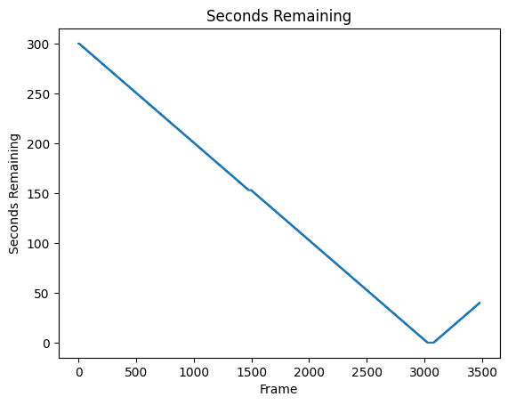
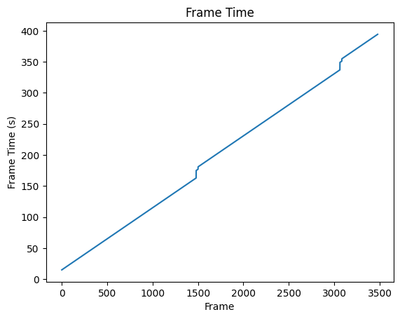
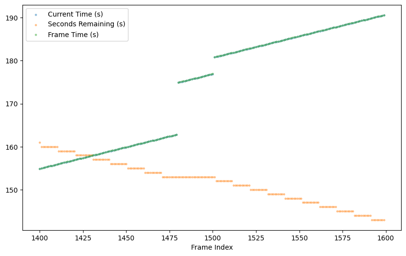
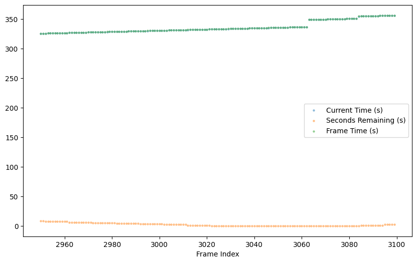

Code
# Imports
from impulse import ReplayDataset
from pathlib import Path
import matplotlib.pyplot as pltReplayData)# Load Game 5 of Team Falcons vs. Team BDS in the RLCS 2024 World Championship Semifinals
# see https://youtu.be/mH4h3Cq6w3Q?t=22553
sample_replay_id = '583e67ad-7b6f-4163-9cf1-81b0d21accf8'
sample_replay = replays.load_replay(sample_replay_id)
print('Type:',type(sample_replay))
print('Replay ID:', sample_replay.replay_id)
print('Replay name:', sample_replay.replay_name)Found 192 parsed replays in database
Type: <class 'impulse.replay_dataset.ReplayData'>
Replay ID: 583e67ad-7b6f-4163-9cf1-81b0d21accf8
Replay name: WORLDS P-H FLCN vs BDS G5 2024-09-15.16.18{'replay_id': '583e67ad-7b6f-4163-9cf1-81b0d21accf8',
'frame_count': 3479,
'feature_count': 161,
'fps': 10.0,
'parsed_at': '2026-02-04T17:29:15.218771+00:00',
'source_file': '/Users/david/dev/impulse/replays/raw/rlcs/2024/World Championship/[2] Playoffs/[4] Semifinals/BDS vs FLCN/583e67ad-7b6f-4163-9cf1-81b0d21accf8.replay',
'ballchasing_id': '83FF88754057B9B0253AF0A3196A1A35',
'replay_name': 'WORLDS P-H FLCN vs BDS G5 2024-09-15.16.18',
'date': '2024-09-15 16-18-36',
'map': 'Underwater_GRS_P',
'match_type': 'Lan',
'team_size': 3,
'num_frames': 10931,
'duration_seconds': 347.9,
'team_0_score': 2,
'team_1_score': 1,
'goals': [{'PlayerName': 'trk511', 'PlayerTeam': 0, 'frame': 4548},
{'PlayerName': 'ExoTiiK', 'PlayerTeam': 1, 'frame': 9418},
{'PlayerName': 'Rw9', 'PlayerTeam': 0, 'frame': 10845}],
'highlights': [{'BallName': 'Ball_TA_87',
'CarName': 'Car_TA_517',
'GoalActorName': 'None',
'frame': 778},
{'BallName': 'Ball_TA_87',
'CarName': 'Car_TA_515',
'GoalActorName': 'None',
'frame': 933},
{'BallName': 'Ball_TA_87',
'CarName': 'Car_TA_517',
'GoalActorName': 'None',
'frame': 2173},
{'BallName': 'Ball_TA_87',
'CarName': 'Car_TA_520',
'GoalActorName': 'None',
'frame': 2352},
{'BallName': 'Ball_TA_87',
'CarName': 'Car_TA_517',
'GoalActorName': 'None',
'frame': 2854},
{'BallName': 'Ball_TA_87',
'CarName': 'Car_TA_519',
'GoalActorName': 'None',
'frame': 2968},
{'BallName': 'Ball_TA_87',
'CarName': 'Car_TA_520',
'GoalActorName': 'None',
'frame': 3311},
{'BallName': 'Ball_TA_87',
'CarName': 'Car_TA_522',
'GoalActorName': 'None',
'frame': 3378},
{'BallName': 'Ball_TA_87',
'CarName': 'Car_TA_516',
'GoalActorName': 'None',
'frame': 3612},
{'BallName': 'Ball_TA_87',
'CarName': 'Car_TA_522',
'GoalActorName': 'None',
'frame': 4038},
{'BallName': 'Ball_TA_87',
'CarName': 'Car_TA_516',
'GoalActorName': 'GoalVolume_TA_4',
'frame': 4548},
{'BallName': 'Ball_TA_89',
'CarName': 'Car_TA_531',
'GoalActorName': 'None',
'frame': 5631},
{'BallName': 'Ball_TA_89',
'CarName': 'Car_TA_531',
'GoalActorName': 'None',
'frame': 6779},
{'BallName': 'Ball_TA_89',
'CarName': 'Car_TA_533',
'GoalActorName': 'None',
'frame': 9258},
{'BallName': 'Ball_TA_89',
'CarName': 'Car_TA_538',
'GoalActorName': 'None',
'frame': 9342},
{'BallName': 'Ball_TA_89',
'CarName': 'Car_TA_529',
'GoalActorName': 'GoalVolume_TA_0',
'frame': 9418},
{'BallName': 'Ball_TA_91',
'CarName': 'Car_TA_550',
'GoalActorName': 'None',
'frame': 10024},
{'BallName': 'Ball_TA_91',
'CarName': 'Car_TA_552',
'GoalActorName': 'None',
'frame': 10482},
{'BallName': 'Ball_TA_91',
'CarName': 'Car_TA_545',
'GoalActorName': 'GoalVolume_TA_4',
'frame': 10845}],
'game_version': '240826.72292.458534',
'player_mapping': {'0': {'name': 'Kiileerrz',
'team': 0,
'steam_id': '76561198980777579',
'stats': {'Assists': 1,
'Goals': 0,
'Name': 'Kiileerrz',
'OnlineID': '76561198980777579',
'Platform': {'kind': 'OnlinePlatform', 'value': 'OnlinePlatform_Steam'},
'Saves': 2,
'Score': 303,
'Shots': 5,
'Team': 0,
'bBot': False}},
'1': {'name': 'trk511',
'team': 0,
'steam_id': '76561198994793330',
'stats': {'Assists': 1,
'Goals': 1,
'Name': 'trk511',
'OnlineID': '76561198994793330',
'Platform': {'kind': 'OnlinePlatform', 'value': 'OnlinePlatform_Steam'},
'Saves': 2,
'Score': 506,
'Shots': 7,
'Team': 0,
'bBot': False}},
'2': {'name': 'Rw9',
'team': 0,
'steam_id': '76561199017029799',
'stats': {'Assists': 0,
'Goals': 1,
'Name': 'Rw9',
'OnlineID': '76561199017029799',
'Platform': {'kind': 'OnlinePlatform', 'value': 'OnlinePlatform_Steam'},
'Saves': 1,
'Score': 335,
'Shots': 3,
'Team': 0,
'bBot': False}},
'3': {'name': 'ExoTiiK',
'team': 1,
'steam_id': '76561198258466111',
'stats': {'Assists': 0,
'Goals': 1,
'Name': 'ExoTiiK',
'OnlineID': '76561198258466111',
'Platform': {'kind': 'OnlinePlatform', 'value': 'OnlinePlatform_Steam'},
'Saves': 3,
'Score': 421,
'Shots': 2,
'Team': 1,
'bBot': False}},
'4': {'name': 'M0nkey M00n',
'team': 1,
'steam_id': '76561198823985212',
'stats': {'Assists': 1,
'Goals': 0,
'Name': 'M0nkey M00n',
'OnlineID': '76561198823985212',
'Platform': {'kind': 'OnlinePlatform', 'value': 'OnlinePlatform_Steam'},
'Saves': 6,
'Score': 617,
'Shots': 1,
'Team': 1,
'bBot': False}},
'5': {'name': 'dralii',
'team': 1,
'steam_id': '76561199031413358',
'stats': {'Assists': 0,
'Goals': 0,
'Name': 'dralii',
'OnlineID': '76561199031413358',
'Platform': {'kind': 'OnlinePlatform', 'value': 'OnlinePlatform_Steam'},
'Saves': 2,
'Score': 308,
'Shots': 3,
'Team': 1,
'bBot': False}},
'6': None,
'7': None},
'parsing_info': {'num_players': 6,
'num_frames_parsed': 3479,
'num_features': 166}}| frame | current time | frame time | seconds remaining | Ball - position x | Ball - position y | Ball - position z | Ball - linear velocity x | Ball - linear velocity y | Ball - linear velocity z | ... | p7_angular velocity z | p7_quaternion x | p7_quaternion y | p7_quaternion z | p7_quaternion w | p7_boost level | p7_dodge active | p7_jump active | p7_double jump active | p7_player demolished by | |
|---|---|---|---|---|---|---|---|---|---|---|---|---|---|---|---|---|---|---|---|---|---|
| 0 | 0 | 14.901003 | 14.903988 | 300.0 | 14.550000 | -32.680000 | 92.779999 | 1125.540039 | -2433.979980 | 26.16 | ... | NaN | NaN | NaN | NaN | NaN | NaN | NaN | NaN | NaN | NaN |
| 1 | 1 | 15.001003 | 15.005630 | 300.0 | -78.570000 | -142.270004 | 92.059998 | -813.640015 | -1670.060059 | 10.04 | ... | NaN | NaN | NaN | NaN | NaN | NaN | NaN | NaN | NaN | NaN |
| 2 | 2 | 15.101004 | 15.107320 | 300.0 | -159.380005 | -308.230011 | 92.099998 | -801.159973 | -1648.510010 | 0.00 | ... | NaN | NaN | NaN | NaN | NaN | NaN | NaN | NaN | NaN | NaN |
| 3 | 3 | 15.201004 | 15.209633 | 300.0 | -238.759995 | -471.750000 | 92.099998 | -786.880005 | -1624.030029 | 0.00 | ... | NaN | NaN | NaN | NaN | NaN | NaN | NaN | NaN | NaN | NaN |
| 4 | 4 | 15.301004 | 15.310703 | 300.0 | -316.700012 | -632.840027 | 92.099998 | -772.599976 | -1599.660034 | 0.00 | ... | NaN | NaN | NaN | NaN | NaN | NaN | NaN | NaN | NaN | NaN |
5 rows × 161 columns

Current time min: 14.901002883911133
Current time max: 394.2158508300781
Frame time min: 14.903987884521484
Frame time max: 394.2313537597656It looks like some strange things are happening right around frame 1500 in all three of these plots. Let’s look at this region of the data more closely to figure out what’s going on.
| current time | seconds remaining | frame time | |
|---|---|---|---|
| 1400 | 154.901245 | 161.0 | 154.928619 |
| 1401 | 155.001251 | 160.0 | 155.031281 |
| 1402 | 155.101257 | 160.0 | 155.133347 |
| 1403 | 155.201263 | 160.0 | 155.234268 |
| 1404 | 155.301270 | 160.0 | 155.301651 |
| ... | ... | ... | ... |
| 1595 | 190.203400 | 143.0 | 190.216064 |
| 1596 | 190.303406 | 143.0 | 190.317627 |
| 1597 | 190.403412 | 143.0 | 190.419250 |
| 1598 | 190.503418 | 143.0 | 190.520935 |
| 1599 | 190.603424 | 143.0 | 190.622635 |
200 rows × 3 columns
plt.figure(figsize=(10, 6))
frame_range = range(first_start_frame, first_end_frame)
plt.scatter(frame_range, frame_subset['current time'], label='Current Time (s)', linewidths=0, s= 10, alpha=0.5)
plt.scatter(frame_range, frame_subset['seconds remaining'], label='Seconds Remaining (s)', linewidths=0, s=10, alpha=0.5)
plt.scatter(frame_range, frame_subset['frame time'], label='Frame Time (s)', linewidths=0, s= 10, alpha=0.5)
plt.xlabel('Frame Index')
plt.legend()
plt.show()
Between frames 1479 and 1480 as well as between 1500 and 1501, there is a jump discontinuity in both the current time and frame time columns. We can also see an anomaly where seconds remaining stays at the value 153 for 30 frames (3 seconds) instead of the usual 10 frames (1 second) for other values around it. The extra 20 frames for which seconds remaining stays at 153 is precisely the length of the middle branch between the two discontinuities in current time/frame time at frames 1480 and 1500.
Let’s see if we can resolve this by looking at goal events in the replay. According to the metadata, goal events occur at the following frames:
And yet, we have fewer frames than that in our frames array:
Number of frames in raw replay: 10931
Number of frames in ReplayData.frames array: 3479This discrepancy is explained by the fact that
31.41994826099454This shows that the original replay file was recorded at an effective tick rate of ~31.42 FPS. Note that there are two FPS values we can speak of: - the raw replay frame rate, which is the rate at which the original raw replay recorded its game data - the sampled fps, which is the rate at which the parser sampled the frames in the raw replay to put into the ReplayData.frames array.
Thus, for instance:
Ratio of raw frames to ReplayData frames: 3.1419948260994537Thus the ratio of raw replay frames to parsed replay frames differs by the raw_frame_rate by a factor of 10, which is the FPS rate of sampling by the parser.
Let’s check how consistent this raw frame rate is across all the replays in our dataset:
[33.78, 35.02, 33.48, 33.09, 31.16, 33.52, 31.99, 33.76, 31.42, 33.26]Minimum: 30.13
Maximum: 35.71As you can see, the raw frame rate hovers close to 30 FPS but varies somewhat from replay to replay.
This indicates how we should align the goal frame indices in the metadata with the sampled frame indices in our frames array.
[1447, 2997, 3451]Let’s take a look at the frames around the second anomaly, roughly around frames 2900-3100.
| current time | seconds remaining | frame time | |
|---|---|---|---|
| 2950 | 325.711670 | 8.0 | 325.730164 |
| 2951 | 325.811676 | 8.0 | 325.831787 |
| 2952 | 325.911682 | 7.0 | 325.933441 |
| 2953 | 326.011688 | 7.0 | 326.035095 |
| 2954 | 326.111694 | 7.0 | 326.136810 |
| ... | ... | ... | ... |
| 3095 | 355.913513 | 2.0 | 355.930237 |
| 3096 | 356.013519 | 2.0 | 356.032135 |
| 3097 | 356.113525 | 2.0 | 356.133575 |
| 3098 | 356.213531 | 2.0 | 356.235260 |
| 3099 | 356.313538 | 2.0 | 356.336914 |
150 rows × 3 columns
plt.figure(figsize=(10, 6))
second_frame_range = range(second_start_frame, second_end_frame)
plt.scatter(second_frame_range, second_frame_subset['current time'], label='Current Time (s)', linewidths=0, s= 10, alpha=0.5)
plt.scatter(second_frame_range, second_frame_subset['seconds remaining'], label='Seconds Remaining (s)', linewidths=0, s=10, alpha=0.5)
plt.scatter(second_frame_range, second_frame_subset['frame time'], label='Frame Time (s)', linewidths=0, s= 10, alpha=0.5)
plt.xlabel('Frame Index')
plt.legend()
plt.show()
[4548, 9418, 10845]By inspection using ReplayViewer, we can see that goals in the frames array occur at frames 1479, 3062, and 3479.
Frame 1479 current time: 162.80172729492188
Frame 1479 seconds remaining: 153.0
Frame 1479 frame time: 162.82666015625
---
Frame 3062 current time: 336.912353515625
Frame 3062 seconds remaining: 0.0
Frame 3062 frame time: 336.9152526855469
---
Frame 3478 current time: 394.2158508300781
Frame 3478 seconds remaining: 40.0
Frame 3478 frame time: 394.2313537597656
---| Ball - position x | Ball - position y | Ball - position z | Ball - linear velocity x | Ball - linear velocity y | Ball - linear velocity z | p0_position x | p0_position y | p0_position z | p0_linear velocity x | p0_linear velocity y | p0_linear velocity z | |
|---|---|---|---|---|---|---|---|---|---|---|---|---|
| 3450 | 1248.739990 | 2420.270020 | 436.359985 | 338.250000 | 1050.349976 | 200.199997 | 2685.530029 | -564.570007 | 17.01 | 1922.449951 | 120.779999 | 0.250000 |
| 3451 | 1282.510010 | 2525.129883 | 452.820007 | 337.170013 | 1047.109985 | 134.630005 | 2876.820068 | -545.880005 | 17.01 | 1899.890015 | 264.230011 | 0.280000 |
| 3452 | 1310.569946 | 2612.260010 | 461.540009 | 336.269989 | 1044.410034 | 80.150002 | 3001.969971 | -522.010010 | 17.01 | 1854.739990 | 437.690002 | 0.280000 |
| 3453 | 1349.719971 | 2733.870117 | 466.140015 | 335.010010 | 1040.630005 | 4.100000 | 3181.620117 | -463.489990 | 17.01 | 1738.589966 | 704.119995 | 0.300000 |
| 3454 | 1383.170044 | 2837.770020 | 463.019989 | 333.929993 | 1037.390015 | -60.770000 | 3320.419922 | -396.140015 | 17.01 | 1593.060059 | 896.950012 | 0.310000 |
| 3455 | 1334.400024 | 2897.020020 | 488.929993 | -874.650024 | 427.109985 | 353.829987 | 3516.129883 | -228.169998 | 17.01 | 974.229980 | 1305.300049 | 0.330000 |
| 3456 | 1247.069946 | 2939.659912 | 520.739990 | -871.890015 | 425.790009 | 287.790009 | 3583.860107 | -87.019997 | 17.01 | 428.500000 | 1495.709961 | 0.090000 |
| 3457 | 1160.030029 | 2982.169922 | 545.960022 | -869.190002 | 424.470001 | 221.960007 | 3600.010010 | 41.490002 | 17.01 | 13.670000 | 1567.560059 | 0.060000 |
| 3458 | 1073.250000 | 3024.550049 | 564.590027 | -866.549988 | 423.149994 | 156.330002 | 3590.350098 | 146.539993 | 17.01 | -262.609985 | 1577.020020 | 0.060000 |
| 3459 | 986.739990 | 3066.800049 | 576.679993 | -863.909973 | 421.829987 | 90.889999 | 3554.459961 | 277.029999 | 17.01 | -550.270020 | 1558.079956 | 0.020000 |
| 3460 | 900.489990 | 3108.909912 | 582.229980 | -861.270020 | 420.510010 | 25.660000 | 3431.310059 | 537.210022 | 17.01 | -889.809998 | 1564.930054 | 0.010000 |
| 3461 | 800.200012 | 3157.860107 | 580.479980 | -858.190002 | 418.970001 | -50.110001 | 3329.610107 | 691.140015 | 17.01 | -1137.520020 | 1500.819946 | 0.040000 |
| 3462 | 714.520020 | 3199.689941 | 571.960022 | -855.549988 | 417.649994 | -114.820000 | 3247.459961 | 788.739990 | 17.01 | -1299.180054 | 1439.890015 | 0.000000 |
| 3463 | 629.109985 | 3241.379883 | 556.979980 | -852.909973 | 416.329987 | -179.330002 | 3107.469971 | 930.020020 | 17.01 | -1470.430054 | 1403.989990 | 0.000000 |
| 3464 | 543.960022 | 3282.949951 | 535.559998 | -850.270020 | 415.010010 | -243.639999 | 2874.560059 | 1144.550049 | 17.01 | -1615.910034 | 1465.030029 | 0.000000 |
| 3465 | 459.079987 | 3324.379883 | 507.730011 | -847.630005 | 413.690002 | -307.769989 | 2738.899902 | 1270.930054 | 17.01 | -1620.109985 | 1575.790039 | 0.030000 |
| 3466 | 374.459991 | 3365.689941 | 473.489990 | -844.989990 | 412.369995 | -371.690002 | 2607.939941 | 1409.969971 | 17.01 | -1517.689941 | 1726.229980 | 0.140000 |
| 3467 | 290.100006 | 3406.860107 | 432.869995 | -842.349976 | 411.049988 | -435.420013 | 2484.399902 | 1556.089966 | 17.01 | -1481.339966 | 1752.670044 | 0.260000 |
| 3468 | 206.009995 | 3447.889893 | 385.880005 | -839.710022 | 409.730011 | -498.959991 | 2356.459961 | 1697.829956 | 17.01 | -1585.459961 | 1650.810059 | 0.280000 |
| 3469 | 172.960007 | 3532.770020 | 358.950012 | -270.140015 | 1878.089966 | -364.739990 | 2193.709961 | 1858.319946 | 17.01 | -1628.140015 | 1601.750000 | 0.270000 |
| 3470 | 150.460007 | 3689.050049 | 326.119995 | -269.440002 | 1873.290039 | -417.880005 | 2061.729980 | 1995.199951 | 17.01 | -1545.300049 | 1677.050049 | 0.270000 |
| 3471 | 114.620003 | 3938.270020 | 264.390015 | -268.320007 | 1865.609985 | -502.630005 | 1831.760010 | 2248.120117 | 17.01 | -1556.739990 | 1663.459961 | 0.270000 |
| 3472 | 92.309998 | 4093.510010 | 220.089996 | -267.619995 | 1860.810059 | -555.419983 | 1673.780029 | 2412.209961 | 17.01 | -1594.010010 | 1626.890015 | 0.270000 |
| 3473 | 61.150002 | 4310.180176 | 150.690002 | -266.640015 | 1854.119995 | -629.099976 | 1540.380005 | 2547.209961 | 17.01 | -1604.550049 | 1616.349976 | 0.270000 |
| 3474 | 34.770000 | 4492.080078 | 94.459999 | -234.830002 | 1463.310059 | 411.980011 | 1433.280029 | 2654.840088 | 17.01 | -1607.520020 | 1613.359985 | 0.270000 |
| 3475 | 15.240000 | 4613.859863 | 126.269997 | -234.229996 | 1459.569946 | 356.790009 | 1165.150024 | 2923.510010 | 17.01 | -1609.130005 | 1611.569946 | 0.270000 |
| 3476 | -12.050000 | 4783.819824 | 163.080002 | -233.389999 | 1454.390015 | 279.760010 | 1031.050049 | 3057.810059 | 17.01 | -1609.170044 | 1611.449951 | 0.270000 |
| 3477 | -35.330002 | 4929.020020 | 187.490005 | -232.669998 | 1449.949951 | 213.949997 | 896.820007 | 3192.040039 | 21.98 | -1619.959961 | 1604.030029 | 299.980011 |
| 3478 | -54.700001 | 5049.669922 | 202.820007 | -232.070007 | 1446.250000 | 159.270004 | 720.770020 | 3331.870117 | 51.02 | -2124.510010 | 843.919983 | 247.199997 |